Bookmark this one. It will take you to the next level in Visual Studio. Personally, me, I needed this article like 2 years ago when I started exploring large C++/C# projects.
In a past article I showed you a general guide to reading large code sources. In that article I showed you the most important thing you can do to learn a large code source. I showed you how to navigate huge projects.
The only problem is that every IDE does this differently. Many many projects are locked into an IDE for its development. I want to save you time and show you how to navigate huge projects in Visual Studio.
I highly recommend memorizing these navigations and practicing them as much as possible with a large code source. The goal is to make them second nature so you can read code with ease.
For this tutorial I will be using only the community edition with no plugins and no extra features. This guide applies to Visual Studio 2012-2023. I will have to make sure its all 100% for 2024 next year. We will see when we get there.
For this article I will show you the meaning of the GUIs and a little about hot keys as we go.
Let's take a look...
How to Navigate the Stack
In my previous article navigating the stack was done with one or two simple GUIs or commands. Though this is ideal, Visual Studio is a different beast.
Instead of one or two ways to navigate a stack we have three. First you can see a function stack, second you can find the usages/references, and third you can go to definitions.
Look at a function stack
First on our agenda is to look at the function stack. This is known in Visual Studio as the "call hierarchy".
For some reason this is restricted to functions. This restriction is the whole reason why we need to split our navigation between function stack, find usages/reference and go to implementation/definition.
Though of the three navigation methods, going up and down the function stack is the most useful.
Right click any function in your project and click "View Call Hierarchy":
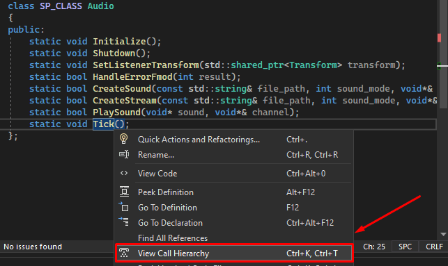You will then see this GUI:
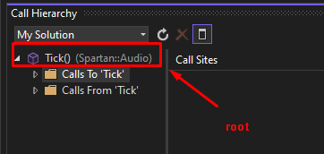All of the functions displayed with this symbol:
Is a root. Just double click it to go to its code.
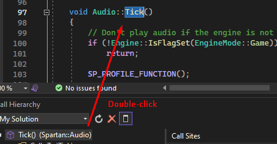Calls to Tick() means you are becoming more abstract. Try to follow along and practice with me.
You are essentially seeing which functions call Tick(). You can memorize which is which this way, the upper folder means you are going up the stack. So if its a folder up above another, it is going up the stack.
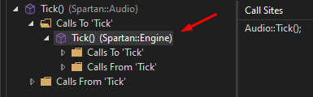Take a look, Engine Tick() calls the Audio Tick():
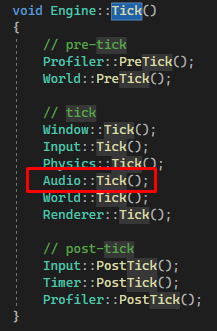We are getting more abstract. Let's abstract further and take a look at where Engine::Tick() is called...
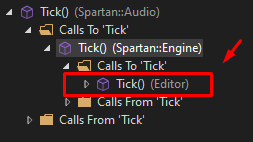The Editor class calls the Engine Tick().
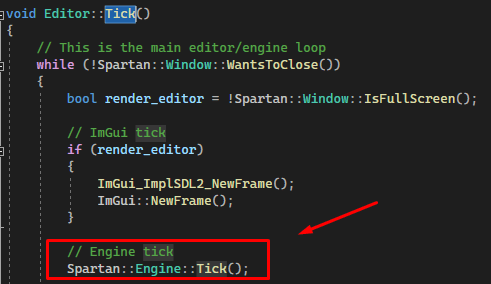We are getting more and more abstract here from our audio tick -> engine tick -> editor tick as we navigate the upper folders inside each function.
Calls from Tick() means you are seeing all functions called within the block of that function. You are becoming more specific.
All functions within Audio::Tick() are displayed:
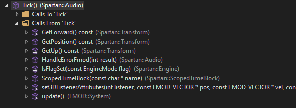
Take a look at the bottom and top pictures. You will see all functions called in Audio::Tick() are inside the From Tick() layer....
Pretty cool right? So as you get more specific going down the call stack you have to choose between functions.
On the right you will see Call Sites.
This is highly useful as you can see all places the function/root is called...
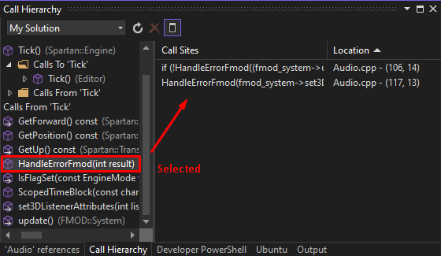When you select a function/root you can see where it is called.
Just double click the call site and you will go to its call.
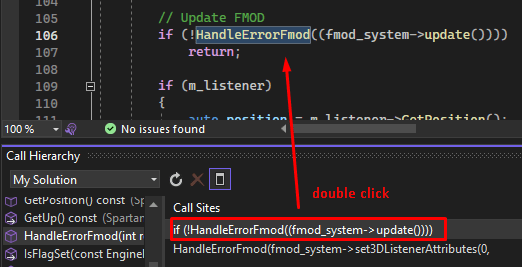This is useful in case the function implementation is used multiple times. You can see all its usages in this way.
Lastly you can add roots and display them.
Just right click and call hierarchy again:
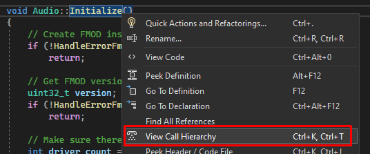That function will be added as a root and you can see more up and down the stack.

These are very powerful in projects which require Visual Studio. Practice these diligently.
Find reference
You can read more about a function, variable or class by finding usages.
In JetBrains the usages are brought on by middle click. Here is is by "find all references" which is essentially "find usages".
Take a look:
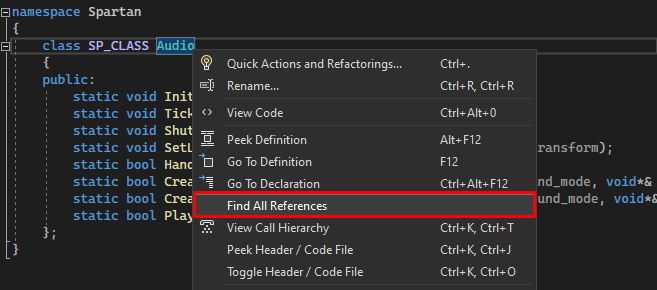 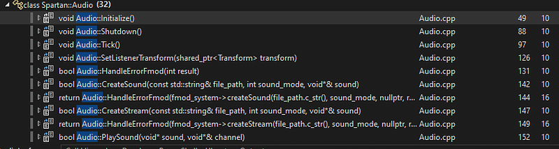From here you can read more about the different methods and variables used in the Audio class.
Try to memorize this. It is the only easier way to look up usages for variables and classes.
Go to definition
We have to explain this individually because the other GUIs do not allow you to look at a definition with ease. It is much easier to just right click the class/function/variable and look for the direct definition.
Right click your class/function/variable and click "go to definition":
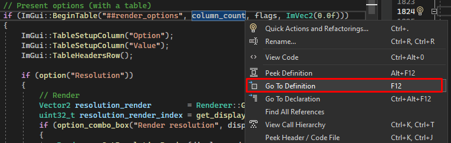You will see the initialization or code written for that object. So for example, column count is 2:

For classes, If you go to the definition of a class it will lead you to the header.
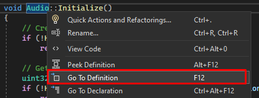From there just go to the declaration of one of its functions or variables:

The Problem With Hot Keys...
Visual Studio does not allow us to set hot keys with mouse clicks. Instead we have to opt-in for keyboard shortcuts. In addition software based hotkey programs like AutoHotkey have some compatibility issues for running with Visual Studio.
If you want to try it despite the compatibility issues it is easy to create AutoHotkey scripts with an LLM. Here is an example of me asking Chat-GPT to create a hook-up to middle mouse button on Visual Studio:#IfWinActive, ahk_exe devenv.exe ; Check if Visual Studio 2022 is active MButton:: ; Define a hotkey for the middle mouse button as call hierarchy Send, ^k ; Send Ctrl+K key combination Sleep, 1000 ; Sleep for 1 seconds (1000 milliseconds) Send, ^t ; Send Ctrl+T key combination #If ; Reset the context-sensitive window check
In this script I attached "call hierarchy" to the middle mouse button. It works 50% of the time due to compatibility issues.
For this reason you are stuck with plain keyboard commands and right click menus. It seems easier to memorize and practice right clicking than setting your own keyboard shortcuts.
But if you desire, you can ask an LLM to hook up mouse buttons to keys and edit the keyboard shortcuts this way:
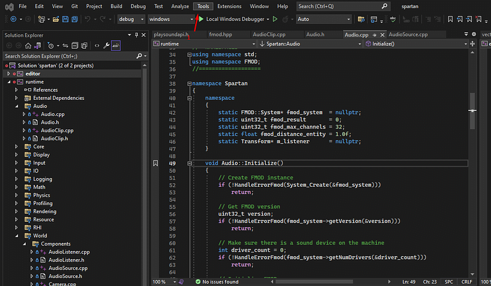Click tools
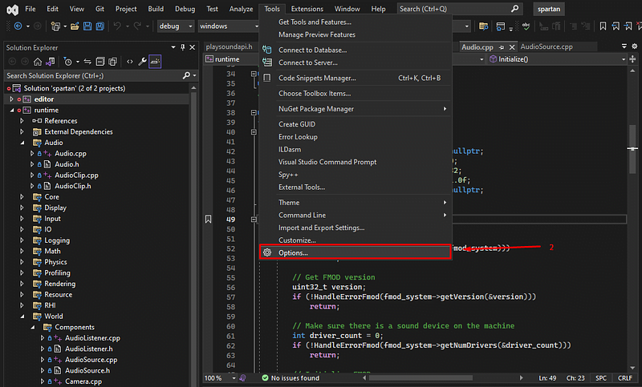Click Options
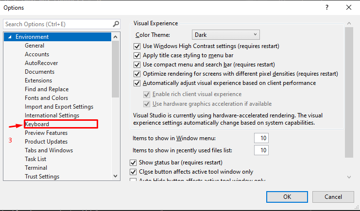Click keyboard
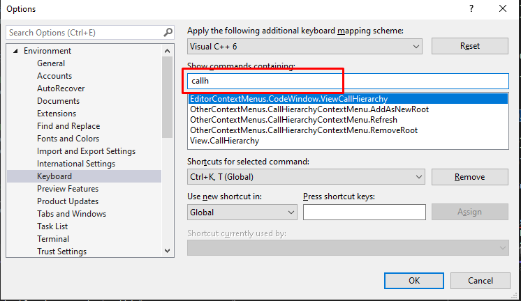Type here
You can set keys here, though I don't really recommend using hotkeys too much. If you want to do it, that is how.
Link the File You Are In to the Project Explorer
You want to easily link your active file to you project explorer, like this:
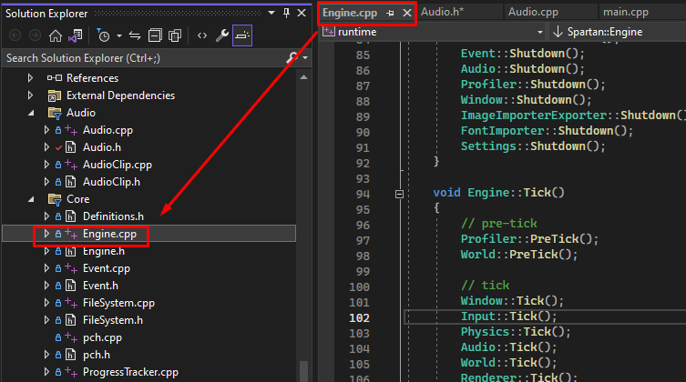To do this, you can only use keyboard shortcuts (Unless you hook a hotkey to your mouse with AutoHotkey).
Now, head to the keyboard shortcut area and type in "syncw" like this:
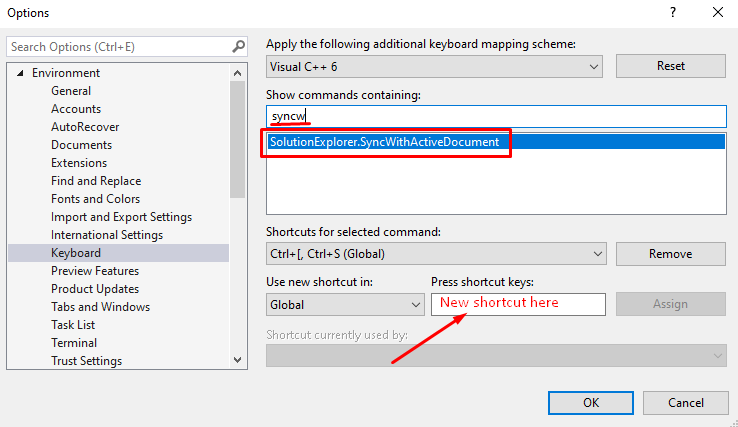Add a shortcut to the "SyncWithActiveDocument" command and you can activate your file in Solution Explorer.
Use a Structural View
The goal of a structural view is to see a summary of a class or file. This is the quickest way to pick 1 function or variable out of 100s in a large file.
In Visual Studio, there are two ways. Either we can open the file in project explorer (in C++ use the .cpp):
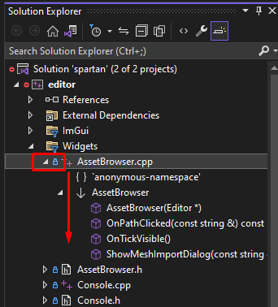Or we can create a seperate window known as a "Solution Explorer View". We can just right click a file and view the Solution Explorer View. In C++ make sure to do this with the header/.h file:
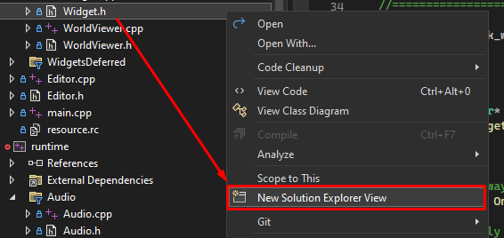 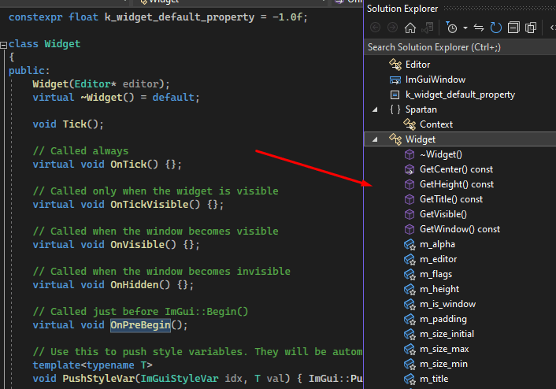So after finding the file in the project explorer, just do one of the above and read through the properties.
The properties are in different order depending on if you use a .h or .cpp. Header files are alphabetical and cpp files are in order of implementation. You can look for the file properties(inner functions/variables/classs) from this view.
Use a Find in All Files
This is useful for finding text, functions and classes within an entire project. It is super simple and super powerful.
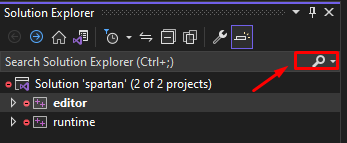Step 1
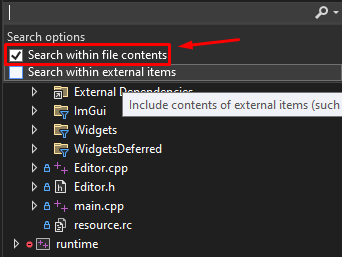Step 2
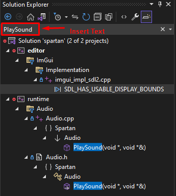Step 3
For example. you can find all occurrences of "playsound" (Not case sensitive).
In step 2 you can choose to include project files and/or external dependencies.
Extremely useful, even for debugging external dependencies.
Always Make Sure You Have Intellisense
I know this is basic but I want to emphasize how much of an advantage you get from intellisense.
You can type the beginning of a class or function and see the potential objects you can use. When selecting each function or class, the documentation inside that class is shown.
Take a look:
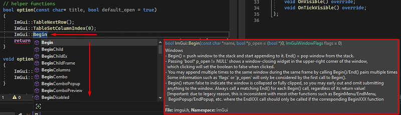This way you can easily type out and remember functions you once used in a library.
If the developer of that library did not include documentation inside his code you won't see documentation. Just keep that in mind.
Use a Good Commit Viewer and Diff Tree
These features are a bit messy. They work though. Let us look into it.
Open up these two windows:
 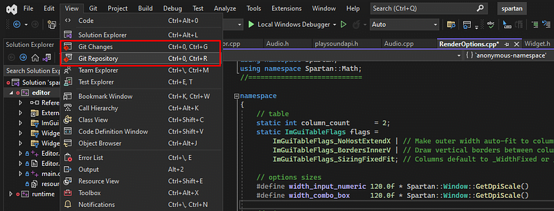
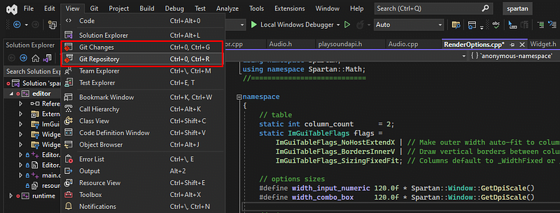
Click on both and you will see something like this...
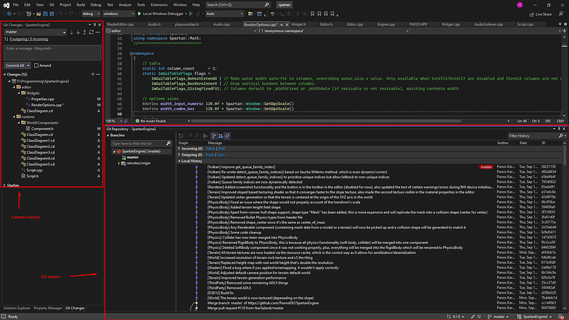On the top left you will see the current commit. This is for what you have staged on git at this moment.
On the bottom right will be the commits viewer. This way you can look into each individual commit.
The top left current commit, you can right click those files and view changes. In addition there is a blame annotation that is very nice.
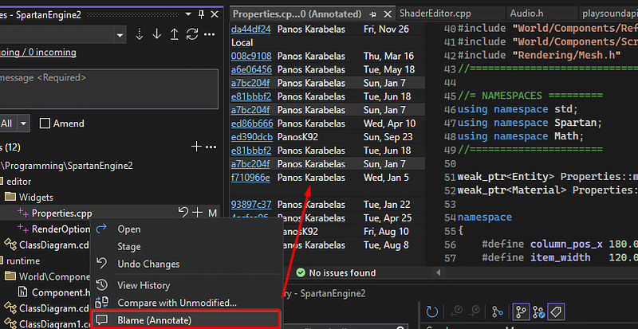This way you can see who last edited a line.
Just manage your commits with the current commits viewer. It just takes some practice as you make pushes to your repo.
Commit Viewer
In the commit viewer you can double click a commit and inspect it.
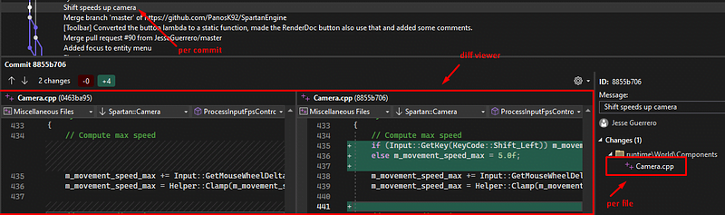When doing so you will see a diff viewer per file for the files on the right.
See where Camera.cpp is on the right? Just click those to see the differences.
You can also create a diff view between two separate commits which is useful for debugging across months of changes.
Control + Left-click two commits and right click then "compare commits"
Take a look:
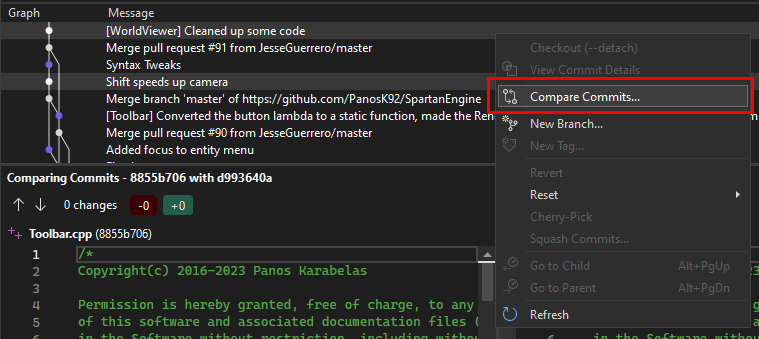Two CTRL+Clicked commits
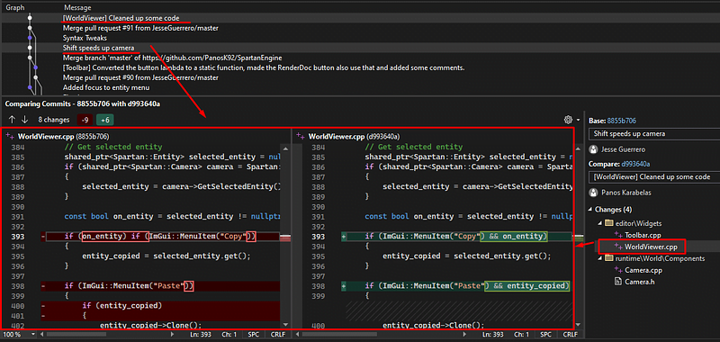In total we are comparing the versions of the project 4 commits apart. We can do this between any number of commits.
In this case it is the two underlined commits.
On the right we see all the file changes done between those two commits. If we double click one file we see the diff viewer for that file.
You can see the difference, color coded, in the big red square in the middle.
Use a UML Generator
The UML generator for Visual Studio has to be added from the Visual Studio Installer.
Take a look:
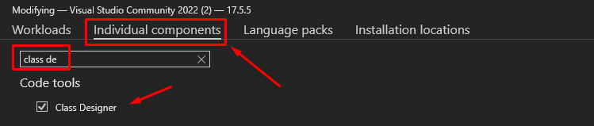This is not available for .NET core projects. But it is available for other C#/C++ projects.
Once it is installed you can create UML Diagrams.
But, it is kind of wonky.
It is still useful, but it is not as refined as Jetbrains.
Sadly, it does not automatically generate parent and child classes, unlike JetBrains.
In Visual Studio you have to build the UML Diagram on your own.
But, also unlike JetBrains you can save these UML Diagrams as a file and revisit/edit them later.
Like this:
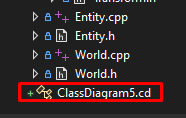Because you can save it as a file I would consider this feature still useful.
Lastly, in C++ you have to choose the header files for the diagrams.
Let's take a look at this:
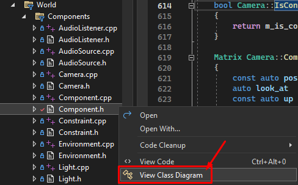After clicking "View Class Diagram" you have to click and drag all child and parent classes into the diagram.
Like this:
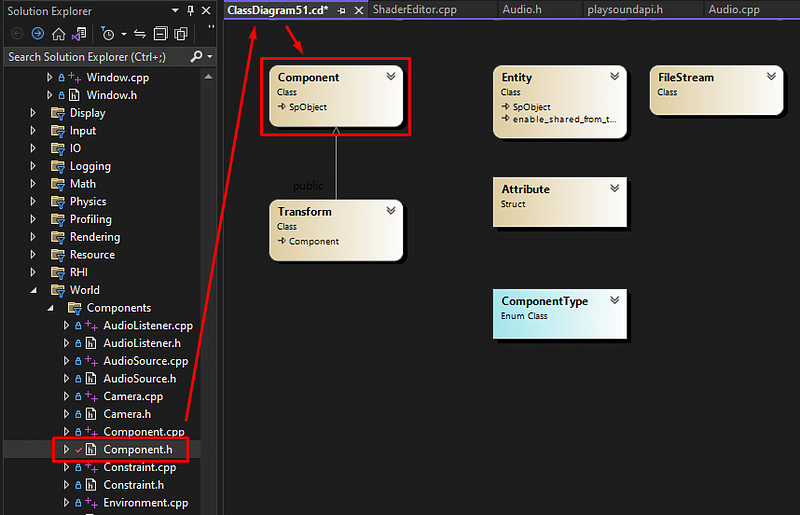The diagram editor automatically links the child and parent classes. You just have to actually drag them in yourself.
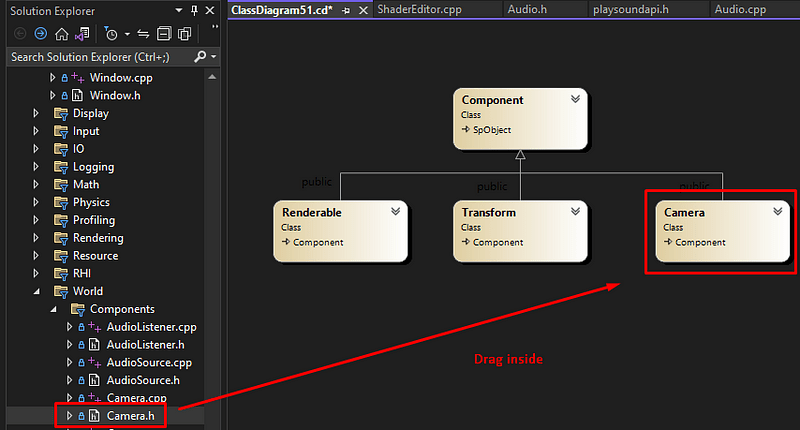Once again, it is not possible to generate it automatically like in JetBrains but you can create and save diagrams for your own viewing.
Here I made one for the Spartan Engine...

Anywho, I hope you learned something...
CTA: Check out my other articles and follow me on medium.
Happy coding!
Resources
Spartan Engine (Used as an example): https://github.com/PanosK92/SpartanEngine
Parent article to this article: How to Learn a Large Code Source Efficiently and Effectively